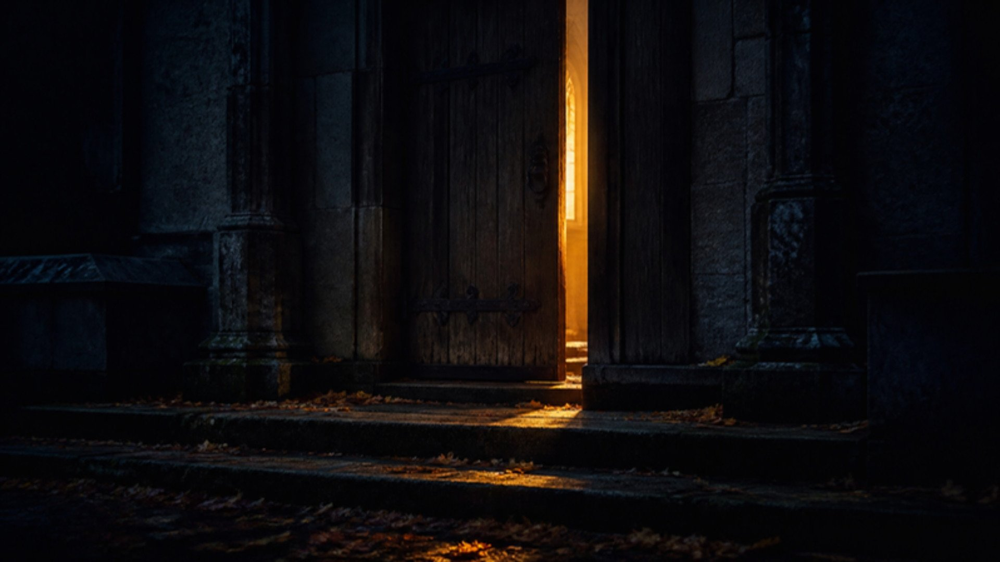

apartarte por completo
participar con tus vecinos
llenar el día de otra cosa
Lo oculto no es tema de conciencia
Un niño disfrazado de bombero no ha hecho un pacto con nadie

El post completo en oscarimorales.com